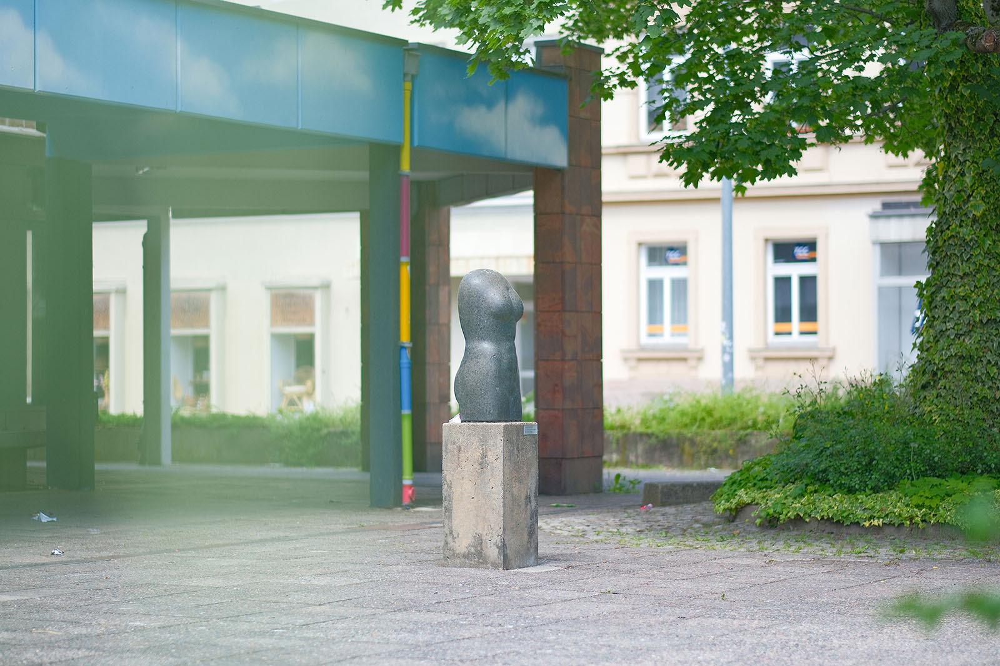
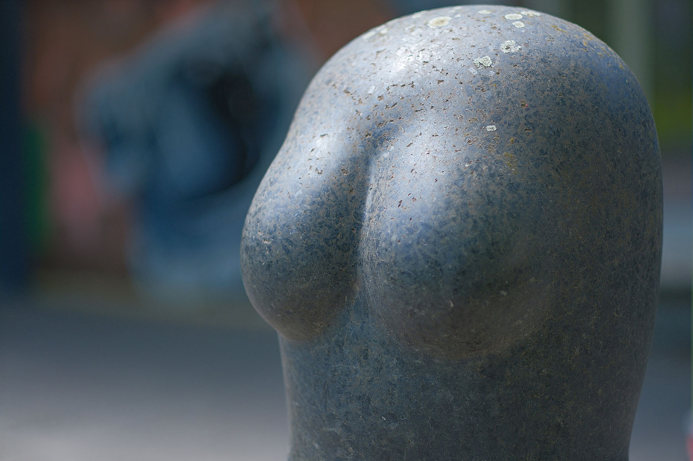
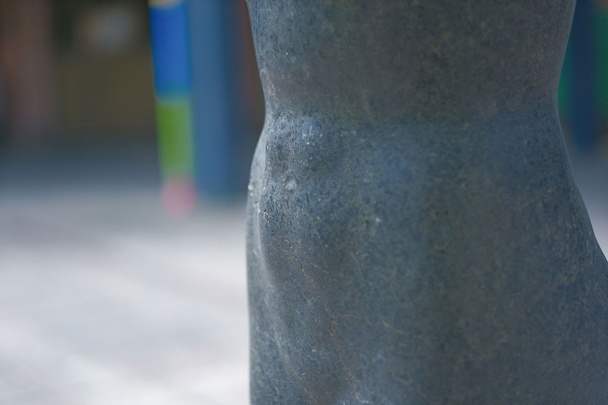
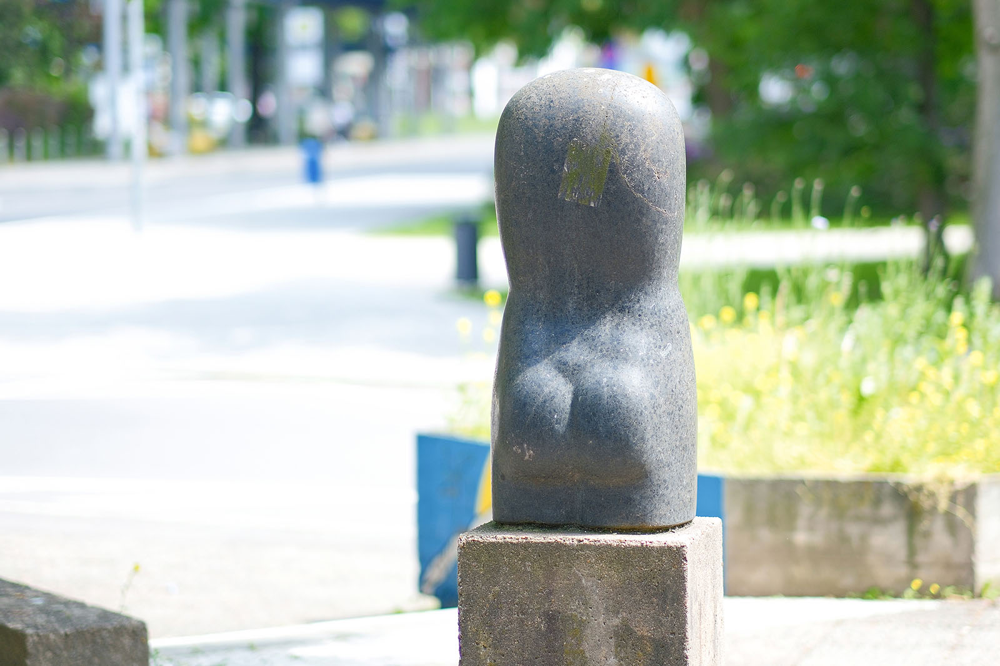
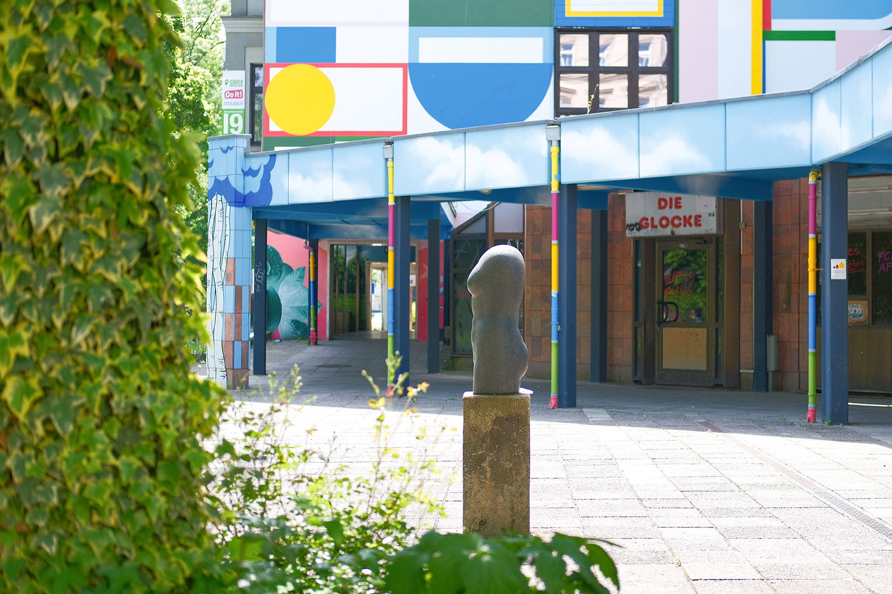
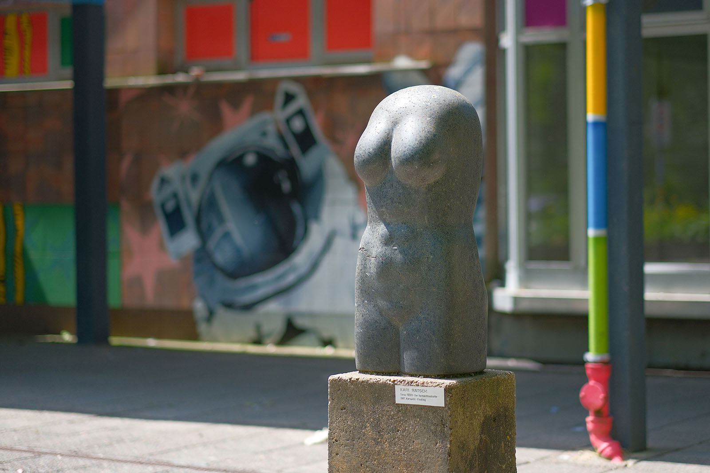

Recherche und Werkbeschreibung: Roman Pilz. Text und Fotografien wechseln sich wie in einem Magazin ab. Ein Klick auf ein Bild öffnet die Großansicht.
"Der Vermächtnishafte" – was für ein rätselhafter Name, den der weibliche Torso von Karl Rätsch trägt. Es ist sehr wahrscheinlich der Künstler selbst gewesen, der dem außerdem als "Torso XXVII" bezeichneten Kunstwerk diesen Beinamen mit auf den Weg gab.
Die mit 80 Zentimetern Höhe etwa lebensgroße Steinskulptur überzeugte die Jury des Bezirks Neubrandenburg, wo der Künstler bereits seit Jahren etabliert war – das Werk war 1987/88 einer der Beiträge aus dem Norden der Republik in der Sektion "Plastik" zur XX. Kunstausstellung der DDR in Dresden. Das Format spricht dafür, dass der Künstler keine gesellschaftliche Auftragsarbeit, sondern ein Werk aus seinem freien Schaffen vorstellte, das aus einer längeren Auseinandersetzung mit dem Thema "Torso" entstanden ist. Durch die Materialwahl gibt er der Skulptur einerseits eine lokale Prägung, die er andererseits durch den philosophischen Titel um eine mehrdeutige und tiefgründige Deutungsebene ausweitet.
Karl Rätsch wurde 1935 in Gersdorf (heute: Gierałtów, Niederschlesien/Polen) geboren. Rätsch stammt aus einer Holzschnitzer-Familie. Von 1952 bis 1954 absolvierte er eine Lehre zum Holzbildhauer in Cottbus.
Anschließend studierte er von 1954 bis 1957 Steinbildhauerei an der Fachschule für angewandte Kunst in Leipzig, deren Abteilung für Plastik von Hellmuth Chemnitz (1903–1969) geleitet wurde. Von 1957 bis 1962 ging er nach Berlin und machte sein Diplom an der Hochschule für bildende und angewandte Kunst in Berlin-Weißensee bei Heinrich Drake und Waldemar Grzimek. Seit 1962 arbeitet Karl Rätsch als freiberuflicher Bildhauer.
Bis 1990 war er auch im Verband der Bildenden Künstler der DDR. Zunächst lebte und arbeitete er in Lindetal bei Neubrandenburg, wo er auch das Zentrum Bildende Kunst mitbegründete, und seit 1974 in Lychen in der Uckermark. Der Bildhauer arbeitet hauptsächlich figürlich – mit Holz, Stein, Terrakotta, Bronze und Kunstharz.
Daneben entstehen auch Bildhauerzeichnungen. Vor allem in DDR-Zeiten schuf er große Auftragswerke für den öffentlichen Raum, später ging er zu vergleichsweise kleineren Formen mit einer mehr gerundeten und teilweise abstrakteren Formensprache über. Rätschs Werke werden seit den 1960er Jahren regelmäßig ausgestellt.
So waren seine Arbeiten mehrfach auf Bezirkskunstausstellungen und auf Kunstausstellungen der DDR in Dresden zu sehen. Eine große Zahl, vor allem seiner frühen Werke, ist im Kulturpark Neubrandenburg öffentlich zugänglich.
Der Bezirk Neubrandenburg insgesamt sowie der langjährige Schaffensort des Bildhauers, Lychen, im heutigen Landkreis Uckermark ist als eine von der Eiszeit geformte Landschaft bekannt: Neben zahllosen Seen trifft man dort auch häufig auf große Findlinge – Steine, die vor prähistorischen Zeiten aus dem hohen Norden durch die Eismassen nach Süden geschoben wurden und dort als Solitäre verblieben.
Immer wieder wurden diese Findlinge auch für die Kunst genutzt: Eines der berühmtesten Beispiele ist die weltweit größte aus einem Stück gefertigte Granitschale für den Berliner Lustgarten, die aus einem der bei Fürstenwalde an der Spree gefundenen Markgrafensteine in jahrelanger Arbeit geformt und 1831 aufgestellt wurde. Dort wie bei dem Chemnitzer Torso kommt erst durch den feinen Schliff die besonders dekorative Wirkung des Natursteins zur Geltung.

Der von der Stadt Karl-Marx-Stadt 1988 für das Neubaugebiet Brühl angekaufte Torso ist (wohl) aus grauschwarzem Kersantit, einem dunklen, magmatischen Mischgestein aus der Gruppe der Lamprophyre, das nach einer der europäischen Fundstellen, einem kleinen Ort bei Brest in der Bretagne, benannt ist.
Obwohl das Mineral in unserer Region auch als Ganggestein im Erzgebirge und bei Ronneburg vorkommt, handelt es sich bei dem Findling wohl eher um einen Geschiebefund, also einen ursprünglich aus Norwegen oder Schweden "eingereisten" Stein. Besonders schön sind die unregelmäßig geformten, über den ganzen Stein verteilten, sogenannten porphyrischen Einschlüsse in tieferem Schwarz. Natürliche Risse im Gestein weisen trotz des glatten Schliffs und der weiblichen Rundungen auf die Kräfte der Natur hin.

Der Stein kann als das Vermächtnis der Erdgeschichte für unsere Zeit gedeutet werden. Als ein Erbe, das durch die Zeit und Erinnerung bis ins Heute geborgen und bewahrt wird. Die Entstehung des Steins ermöglicht einen Rückgang bis in erdgeschichtliche Urzeiten, als von menschlicher Existenz noch keine Spur war, und wird allein durch die Wahl des Materials sowie des Titels vermittelt. Zur letzten Eiszeit, als der Stein in Bewegung geriet, waren zwar schon Jäger und Sammler an den Rändern der Eismassen anzutreffen, doch erst viel später sammelt (oder erwirbt) der Künstler den Findling und macht aus dem Vermächtnis ein Kunstwerk.
Rätsch widmet sich dem Menschenbild – dem weiblichen Akt – jedoch als unvollständigem Torso, also überindividuell, als sinnlicher und zeitloser Form. Der Torso zeigt zwar nicht den ganzen Körper des Menschen, animiert aber, ob geschaffen oder geworden, die Vorstellungskraft dazu, das Fehlende zu ergänzen, und behauptet den Anspruch der Schönheit auch als Fragment.

Aber während bei den in der Neuzeit wiedergefundenen antiken Bildhauerwerken oft herbe Bruchkanten und willkürlich meist die filigraneren Glieder und Formen verloren gegangen sind, so formt Karl Rätsch ganz bewusst und annähernd symmetrisch eine bogenartige Schulterpartie ohne Halsansatz, sanfte Brüste, einen straff gewölbten Bauch mit einer schmalen Hüfte und einem festen Hinterteil, worunter sich lang und fast oval die Kontur der Oberschenkel bildet, zwischen denen der Schritt nur sanft angedeutet ist.
Wie ein Schmeichelstein lockt das Werk zur Berührung und aus der Berührung stammt möglicherweise die Inspiration zu diesem Werk, vielleicht aus dem Gedächtnis, ganz ohne Modell. Während also der Torso als materielle Form auf das Vermächtnis der antiken Bildhauerkunst hinweist, so weist der Künstler als Mensch auf seine Biografie und seine Vorstellung, auf das nicht fassbare, geistige Gebilde der Erinnerung hin. In jedem Einzelnen überdauert diese Art des Vermächtnisses, meist ebenso unvollständig wie ein Torso, aber gemeinsam mit den Erinnerungen der anderen wird in der Gesellschaft so das Vermächtnis ganzer Generationen begründet. Kunstwerke helfen dieser Art von Erinnerung im Großen wie im Kleinen, eine Form zu geben.

